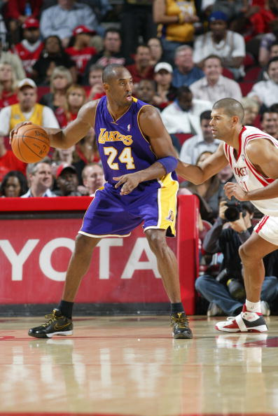
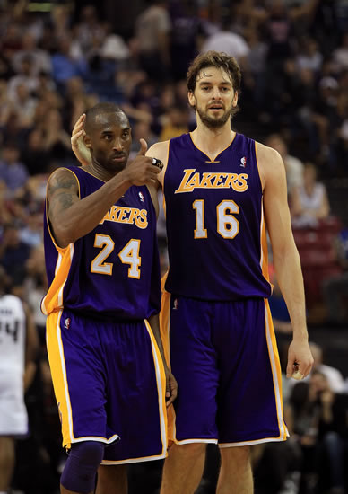
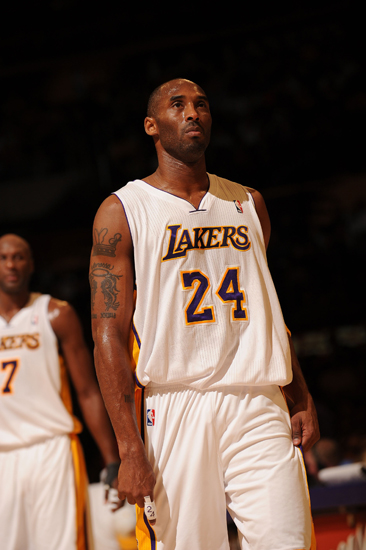
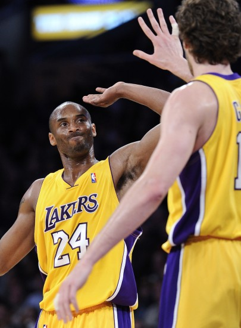

如果问你湖人是谁的球队，相信大家都会毫不犹豫的说出科比的名字。如今的洛杉矶湖人，已经拥有科比的个人气质。当说到湖人队的时候，人们脑海里不禁都会蹦出科比-布莱恩特的名字。
虽然现在科比在比赛中很少会隔人暴扣，但是这并不代表他的弹跳能力正在退化。现在的科比，进攻手段更加丰富，节奏感更加明显。不过，当他热血沸腾的时候，篮筐和防守球员都要小心了。




科比今年4月正式离开赛场之后，开启了相当丰富的退役生活，而他的妻子瓦妮莎为他怀上了第三个孩子，在前两个孩子均为女孩之后，值得一提的是，其中一张照片正是海龟爬向大海的照片，迎来不少称赞。
科比有望迎来首个儿子。科比退役后也终于有足够的时间去陪伴妻子，近日他就携孕妻来到了美国的夏威夷度假，而向来喜欢在社交网站上晒出生活照的瓦妮莎也适时晒出了旅行照片。
值得一提的是，就在几日之前，科比和瓦妮莎还一同观看了阿黛尔演唱会，科比全程对瓦妮莎贴心呵护，并为爱妻弯腰系上鞋带，迎来不少称赞。科比夫妇的爱情虽然经过很多困难，曾一度分道扬镳，但如今仍旧恩恩爱爱，令人羡慕。